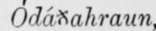
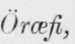
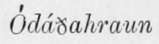

The Probable Genesis Of Askja And Iceland. Part 6
Description
This section is from the book "Askja: Iceland's Largest Volcano", by W. G. Lock. Also available from Amazon: Askja: Iceland's Largest Volcano.
The Probable Genesis Of Askja And Iceland. Part 6
The regularity and evenness with which these vast sheets have been deposited seem to point to a remarkably peaceful welling forth of the floods of molten rock, accompanied by the discharge of little or no fragmentary material, for no layers of ash interpose between the strata, the thin layers of clinker-like crust alone being found. Their deposit, however, appears to have first greatly narrowed in, and ultimately to have sealed the vent whence they issued; and then came troublous times.
As to the site of this volcanic vent, I believe that immediately following the disturbances of the glacial epoch a rift in the earth's crust extended from south to north under those portions of the island now known as the Vatna Jokull and the Oddftahraun as far north as Krajia; fragments of the miocene plateau being-left standing on both sides of the southern end of the rift, it was narrower than in the centre, and the superincumbent masses of igneous rock now existing there, were sooner piled up than where the rift was wider; as also was the case towards the northern end where it also was less in width, the volcanic vent being thus at a comparatively early period of its post-tertiary history narrowed down to the limits of the Uddftahraun. The mountain masses lying upon these rifts on the north and south, stand to this day as a glance at the map will show. The greater number of the foundation strata of the island were probably deposited during the time the outlet extended north and south through the  , and by the welling forth of the later sheets of molten rock, the outlet was still further narrowed down to the limits of the Askja crater. The Oddftahraun lies higher than the Myvatns  strong presumptive evidence that it lies nearer the vent whence the sheets of rock issued, and also that the later ones were less in bulk than those preceding, and consequently did not extend farther round the vent than the borders of the  ; the very last that issued prior to the upbuilding of AsTcja's mountainous periphery being the comparatively smaller ones, that form its widely extending base. One thing is certain, Askja is surrounded with a tract covered with lava which, subsequently to the deposit of the most superficial sheet of rock on the plateau, has issued from that crater, and welled forth from rifts and smaller volcanic mountains around it, having as large an area as the whole of the other tracts similarly overspread in the island ; and this fact in itself is strongly corroborative of the view taken that the Askja crater marks the focus of volcanic activity in Iceland.
It is an easy matter to trace the rift, of which Askja is the present great central outlet, for it forms to this very hour a covered channel running almost due north for a distance of forty miles, and another running south to the coast, both clearly traceable by signs of active volcanicity in several places, where gases from the central vent force their way through the porous lava filling in the rift, and form solfatarar in spots where cracks and fissures exist.
The Fremrindmar (Farther-solfatarar) lie upon the northern channel on the very verge of tho Oddftahraun, and mark where an immense flood of lava in comparatively recent times burst forth through the overlying strata, roofing in the rift, at a weak spot between the site of former disturbance farther north, where volcanic mountains and vast lava-floods piled above offered more resistance, and another volcanic range, the Northern Dyngjufjdll, which mark the course of the rift through the Odaftahraun. Farther north, upon the line of this rift are also the HUarndmar, the solfatarar in which are situated the mud wells briefly described in Chapter II, Leirhnukr, and Krafla ; and it is possible at the latter place, which has been the scene of terribly violent eruptions, ramifications extend to the peistareykir solfatara and the Uxahver group of hot springs. From Leirhnukr, and a number of fissures between that volcanic mountain and the Fremrindmar (all lying in a line running from south to north upon the rift), lava-flood after lava-flood streamed forth in the years a.d. 1724, 1725, 1727, 1728 and 1729, spreading over the plateau in both an easterly and westerly direction. That portion of the rift south of Askja runs nearly due south under the Oddftahraun, and the icy wastes of the Vatna Jokull to the coast, its course being marked by the Kverklmukarani and the Kverkfjull, a range of volcanic mountains penetrating-far amid the glaciers of the Jokull, possibly even as far south as the Orcefa Jokull, the volcano which marks the termination of the rift. From the Kverkjjoll, Mr.
Watts saw smoke ascending during the Askja eruption in 1875. Further, and most convincing evidence that the volcanic vents on this rift are connected with a central vent, and with each other, is found in the phenomena of the eruptions in the years 1727, 1728, and 1729. It is recorded that the Orcefa Jokull took the initiate on the 3rd August, 1727, Leirhnukr following suit on the 21st of that month, the Jokull remaining active until the spring of the following year, when a fresh outburst at Leirhnukr on the 18th April, and the opening of rifts and the formation of erupting craters in the Dalfjail, in Hrossadalr, and at Bjarnarflag-ail three spots close together on the rift between Leirhnukr and Askja, and lying at a far lower altitude than the Orcefa Jokull-the lava-floods were diverted from the Jokull and found outlets in the four places mentioned. Leirhnukr was active during the whole of the following year. It is also worthy of notice, that in 1728, when no less than five volcanic vents were active upon a clearly traceable rift, or channel, running north and south from Askja, it is recorded that 1 this same year volcanic action was going on in the lava wastes round Hekla.' It will be remembered that 1 mentioned on page 15, that to judge by the ' lay' of most of the lava-beds around that volcano they appeared to have welled forth from fissures above a channel running from S.W. to N.E. that would intersect the Askja crater, if such existed and extended far enough in a north-easterly direction, and not from Hekla or from rifts radiating from the volcanic vent of that mountain ; and the fact that 'volcanic action was going on in the lava wastes round Hekla,' and not from the volcano itself, at the time that five vents upon a far distant rift or channel were erupting is, at any rate, something more than slightly corroborative of the opinion expressed by me that a channel also runs in the direction of Hekla from a main central vent.
Continue to:
- prev: The Probable Genesis Of Askja And Iceland. Part 5
- Table of Contents
- next: The Probable Genesis Of Askja And Iceland. Part 7